OAuth 2.0
Letting users grant your app access to a third-party API: the authorization code flow, the state parameter, PKCE, and refresh tokens
Third-Party APIs
Web APIs
- Many apps have APIs that let programs access user data with HTTP requests
GET api.github.com/user- The logged-in user's profileGET api.github.com/user/repos- Their repositories, including private onesPOST api.github.com/repos/<owner>/<repo>/issues- Create an issue
- You want your app to use this API on behalf of your users
- A scrum board app that creates GitHub issues for your users
- A "Login with GitHub" button (Your HW!)
- How can your users let your app access their GitHub accounts securely?
Bad Idea: Ask for Their Password
Have your users give you their GitHub username and password- Never ask for a password to someone else's site
- You'd have to store it in plain text to reuse it
- Your app gets full access to their account. Not just what you need
- The user can't revoke your access without changing their password
- It trains users to type their passwords into random sites
Bad Idea: Ask for Their API Key
Have the user create an API key on GitHub and paste it into your app- Better than a password, but:
- The user has to handle a secret. Never trust your users, not even with their own security
- Requests from your app look exactly like requests from the user
- No accountability. If your app misbehaves, GitHub can't tell it was you
- If the key leaks, there's no way to tell who is using it
- Your usage counts against the user's rate limits (Or bill!)
OAuth 2.0
- OAuth 2.0 (Open Authorization) - The standard way for a user to grant an app limited access to their account on another service
- The user approves your app on GitHub's site
- Your app never sees their password
- GitHub issues an access token directly to your app
- The user never handles the access token
- The token is tied to your app. GitHub knows it's you (Accountability)
- The token is limited to the permissions (scopes) the user approved
- The user can revoke your app's access at any time
- The user still has to trust your app with the data they approve
OAuth Roles
| Role | Who | Example |
|---|---|---|
| Resource Owner | The user | You |
| Client | The app that wants access | Your app |
| Authorization Server | Authenticates the user and issues tokens | github.com/login/oauth |
| Resource Server | Hosts the protected data (The API) | api.github.com |
- The authorization and resource servers are often run by the same company, but they are different servers with different jobs
Client Registration
- Before any user can log in, you register your app with GitHub
- Client ID - Identifies your app. Public
- Client Secret - A password for your app
- Proves that a request came from your server
- Only ever stored on your server (In your
.envfile). Never in your front end or your git repo
- Redirect URI - Where GitHub sends users after they approve your app
http://localhost:8080/authcallbackon the HW- GitHub only redirects to the URI you registered
OAuth Flows
- OAuth has several flows for different kinds of apps
- We'll use the Authorization Code Flow
- For apps with a server that can keep a secret
- The most common flow, and the most secure
- Other flows at the end of the lecture
State
Recall: Login XSRF
- Login XSRF: The attacker logs the victim into the attacker's account
- Your
/authcallbackendpoint is a login endpoint! - The usual XSRF defenses don't help here:
/authcallbackis designed to receive cross-site requests (A redirect from github.com)- It's a top-level GET navigation, so
SameSite=Laxcookies are sent - GitHub builds the request, not your front end. There's no form to add an XSRF token to
The Attack
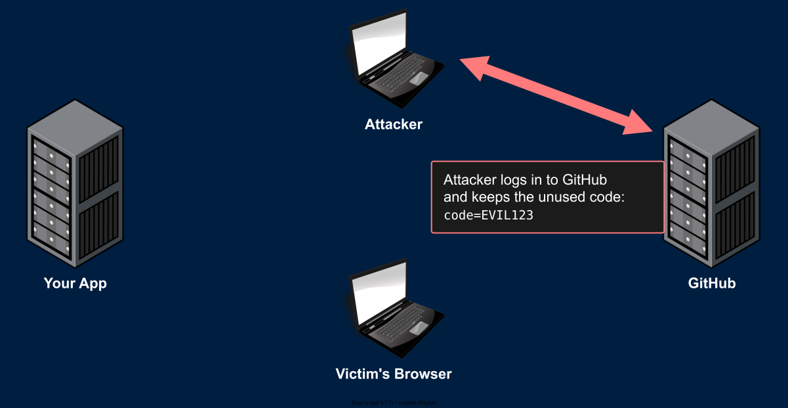
- The attacker starts "Login with GitHub" on your app using their own GitHub account
- They stop before following the final redirect and keep the unused code
The Attack
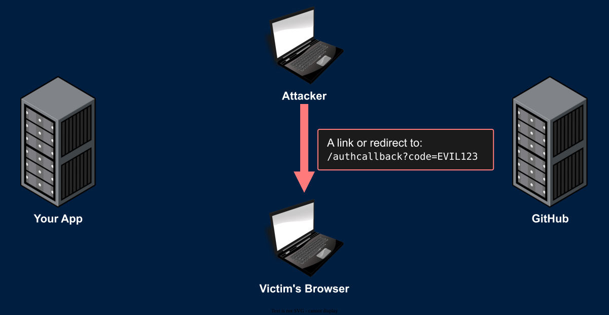
- The attacker gets the victim to open a link to your callback with the attacker's code
The Attack
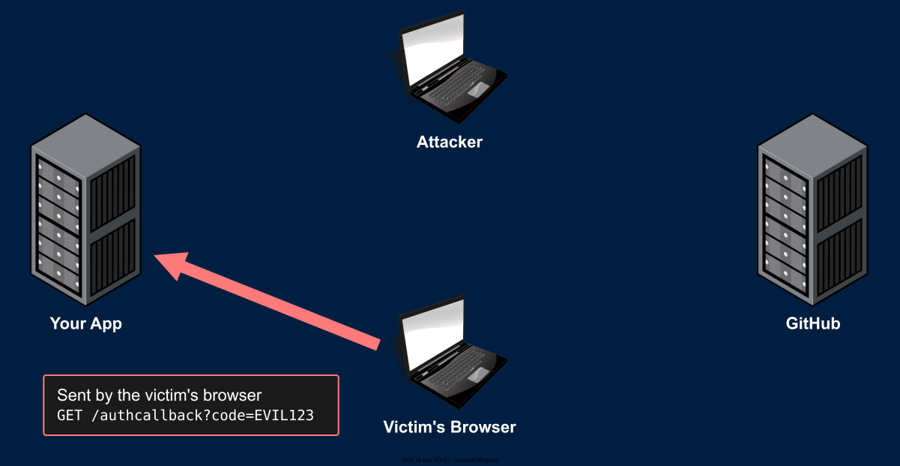
- To your app, this looks exactly like the end of a normal login
The Attack
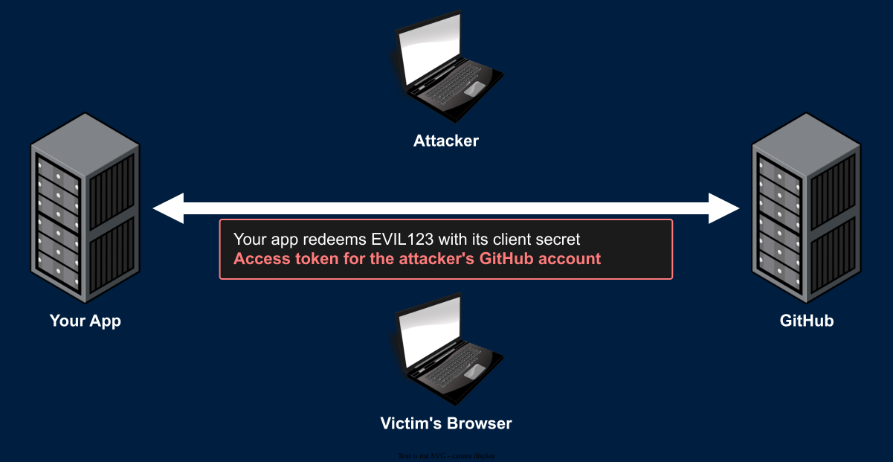
- Your app redeems the code with its own client secret. Everything checks out
The Attack
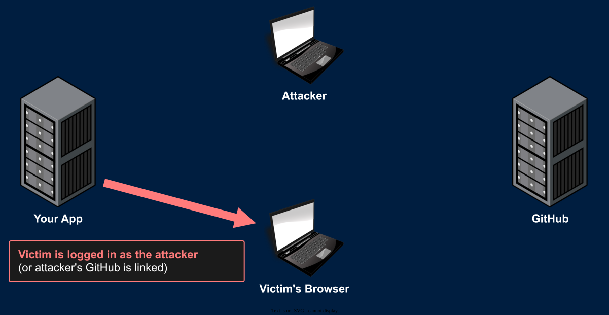
- The victim is now logged in to the attacker's account
- Everything they save goes to an account the attacker controls
- Worse: If your app lets logged-in users "connect" a GitHub account
- The attacker's GitHub account is now linked to the victim's account
- The attacker clicks "Login with GitHub" and is logged in as the victim
The State Parameter
- Before redirecting to GitHub (Step 1):
- Generate a random, unguessable
statevalue - Bind it to this browser
- Add it to the authorization request
- Generate a random, unguessable
- GitHub sends the same
stateback with the code (Step 4) - At
/authcallback:- Check that the
statematches the one bound to this browser - If it's missing or doesn't match:
400 Bad Requestand stop. Never redeem the code - Delete the state after checking. Each state is single use
- Check that the
- The state is an XSRF token for your OAuth callback
The State Parameter
The State Parameter
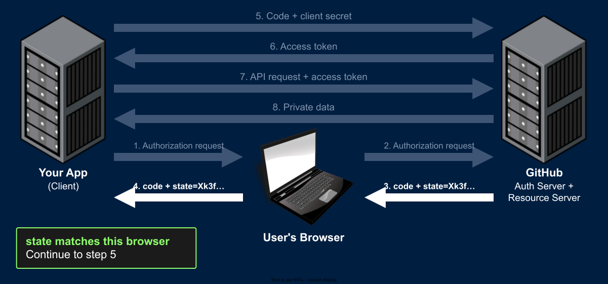
The State Parameter
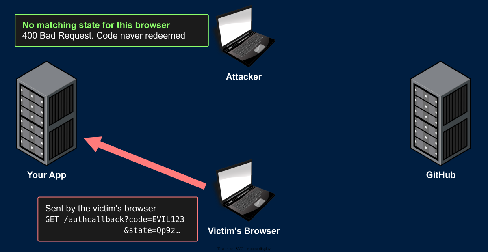
- The attacker's link carries the attacker's state (Or none at all)
- That state was bound to the attacker's browser, not the victim's
- The attacker can't learn or guess the victim's state
Binding State to the Browser
- The user usually isn't logged in yet, so there's no session to attach the state to
- One approach: Store it in a cookie before the redirect
Set-Cookie: oauth_state=Xk3fR9...; HttpOnly; Max-Age=600; SameSite=Lax- At the callback, compare the query string
stateto the cookie
- Must be
SameSite=Lax, notStrict- The callback is a cross-site navigation from github.com. A
Strictcookie wouldn't be sent!
- The callback is a cross-site navigation from github.com. A
- Generate it like any other token:
secrets.token_urlsafe(32) - You have some freedom in how you implement this on the HW, as long as it stops the attack
PKCE
Stolen Codes - The Damage
- Public clients (Mobile apps, desktop apps, front-end-only apps)
- Can't keep a secret. Anyone can extract a secret from the app's code
- So there's no client secret, and the attacker can redeem the stolen code themselves
- Game over
- Confidential clients (Your server)
- The attacker can't redeem the code without your client secret
- But they can inject it: Start a login on your app in their own browser, then swap in the stolen code at your callback
- The state matches (It's the attacker's own login!)
- Your server redeems the victim's code with your secret
- The attacker is logged in as the victim
PKCE
- Proof Key for Code Exchange (PKCE, pronounced "pixy")
- Idea: Prove that whoever redeems the code is the same one who started the login
- A brand-new secret for every login
- Created by your server at step 1
- Never sent through the browser
- Only revealed to GitHub in step 5, on the back channel
- Think of it as a one-time client secret that exists for a single login
PKCE - Step by Step
- Your server generates a random code verifier and stores it with this browser (Just like the state)
- Your server computes the code challenge:
BASE64URL(SHA256(code_verifier)) - The authorization request includes
code_challengeandcode_challenge_method=S256 - GitHub stores the challenge with the code it issues
- The token request includes the
code_verifier - GitHub hashes the verifier and compares it to the stored challenge
- No match: No access token
PKCE
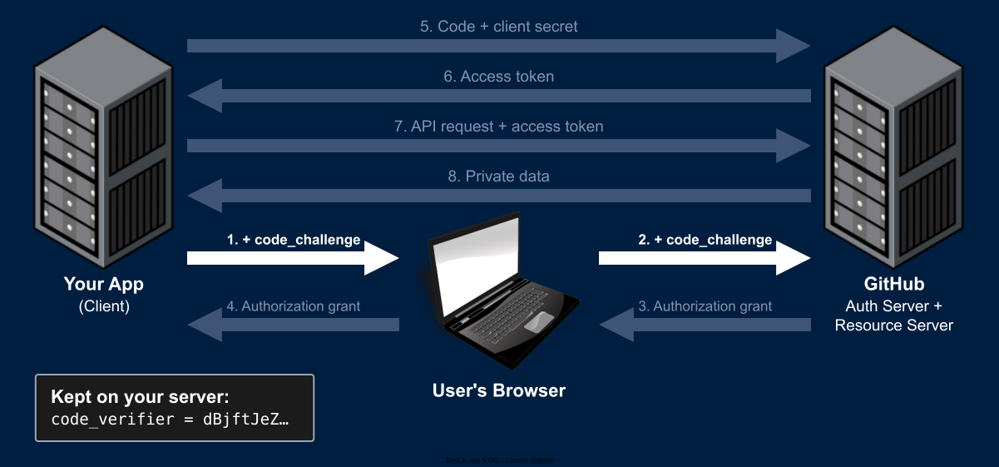
PKCE
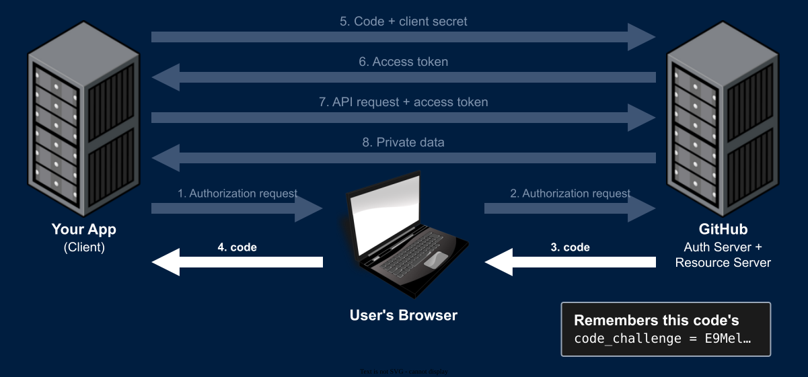
PKCE
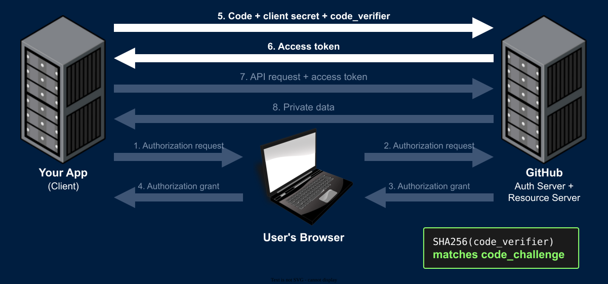
PKCE - The Stolen Code
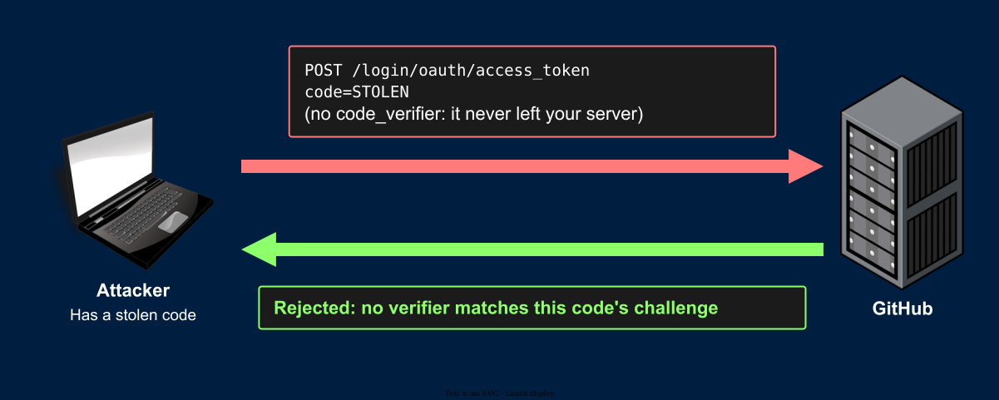
- An injected code fails the same way: Your server sends the verifier from the attacker's login, which doesn't match the challenge from the victim's login
Why PKCE Works
- The challenge travels through the browser. Assume the attacker sees it
- SHA-256 is a one-way function. The attacker can't compute the verifier from the challenge
- The verifier is only sent in step 5
- A direct HTTPS request from your server to GitHub. The attacker never sees it
- Every login has a new verifier, so there's nothing to steal ahead of time
code_challenge_method=plainsends the verifier itself as the challenge- Only safe if the attacker can't see step 1. Always use
S256
- Only safe if the attacker can't see step 1. Always use
PKCE in Python
import base64
import hashlib
import secrets
code_verifier = secrets.token_urlsafe(64) # 86 characters (43-128 allowed)
digest = hashlib.sha256(code_verifier.encode()).digest()
code_challenge = base64.urlsafe_b64encode(digest).rstrip(b"=").decode()- Store
code_verifierwith this browser (Like the state) - Step 1: Add
code_challengeandcode_challenge_method=S256to the authorization URL - Step 5: Add
code_verifierto the token request BASE64URLuses-and_instead of+and/, and has no=padding
State vs. PKCE
| State | PKCE | |
|---|---|---|
| Checked by | Your app (At the callback) | GitHub (At the token endpoint) |
| Stops | Login XSRF (A code you didn't ask for) | Stolen and injected codes |
| Sent through the browser | The state, both ways | Only the challenge (A hash) |
- Current best practice (RFC 9700, 2025): Use PKCE for every client, even ones with a client secret
- OAuth 2.1, the next version of OAuth, requires it
- The HW requires state. PKCE is recommended
Tokens
Refresh Tokens
- Many APIs make access tokens expire quickly (eg. 1 hour)
- Along with the access token, they issue a long-lived refresh token
- When the access token expires, trade the refresh token for a new one:
POSTto the token endpoint withgrant_type=refresh_token, the refresh token, and your client credentials- You get a new access token (And sometimes a new refresh token)
- The user doesn't have to do anything
- GitHub OAuth App tokens don't expire, so you won't need this on the HW
Why Refresh Tokens?
- Security
- The access token is sent to the resource server on every API request. It's the most exposed token
- A stolen access token only works until it expires
- The refresh token only goes to the authorization server, and is useless without the client secret
- Performance
- Access tokens can be self-contained: Signed so the resource server can verify them without asking the authorization server or a database (eg. JWTs, coming in a later HW)
- Fast, but a self-contained token can't be revoked before it expires
- So they're kept short-lived, and the refresh step is where the authorization server can say no
What If It Leaks?
| Leaked value | The attacker can | Protection |
|---|---|---|
| Authorization code | Nothing on its own | Single use, expires in minutes, needs the client secret (And PKCE verifier) |
| Access token | Call the API as the user, within its scopes | Short expiration. Request few scopes |
| Refresh token | Nothing without the client secret | Authorization server can revoke it |
| Client secret | Redeem stolen codes and refresh tokens as your app | Can't get new codes (They're sent to your redirect URI). Regenerate the secret |
- Access tokens, refresh tokens, and the client secret must be stored in plain text. Keep them on your server only
Other Flows
Other Flows
- Client Credentials - Your app accesses the API as itself, with no user involved
- Public data or app-level endpoints. Can't access any user's private data
- Device Authorization - For devices without a good browser (TVs, command line tools)
- The device shows a short code. The user approves it on their phone or computer
- eg.
gh auth login
- Authorization Code + PKCE, without a secret - For public clients (Mobile apps, front-end-only apps)
- PKCE is what makes this safe
- Implicit (Deprecated) - The access token was sent directly to the browser in the redirect
- No code, no secret, and the token is exposed in the URL. Removed in OAuth 2.1
- The HW: GitHub's Web Application Flow (Authorization Code) only
Summary
Login With GitHub - Checklist
- Register your app. Client secret in
.envonly /authgithub: Generate a state (And PKCE verifier), bind it to the browser, and redirect to GitHub/authcallback: Check the state. No match?400and stop- Trade the code (+ client secret, + verifier) for an access token on the back channel
GET /userwith the access token to identify the user- Find or create their account by GitHub's numeric ID
- Issue your own auth token cookie
- Don't keep the access token unless you need it